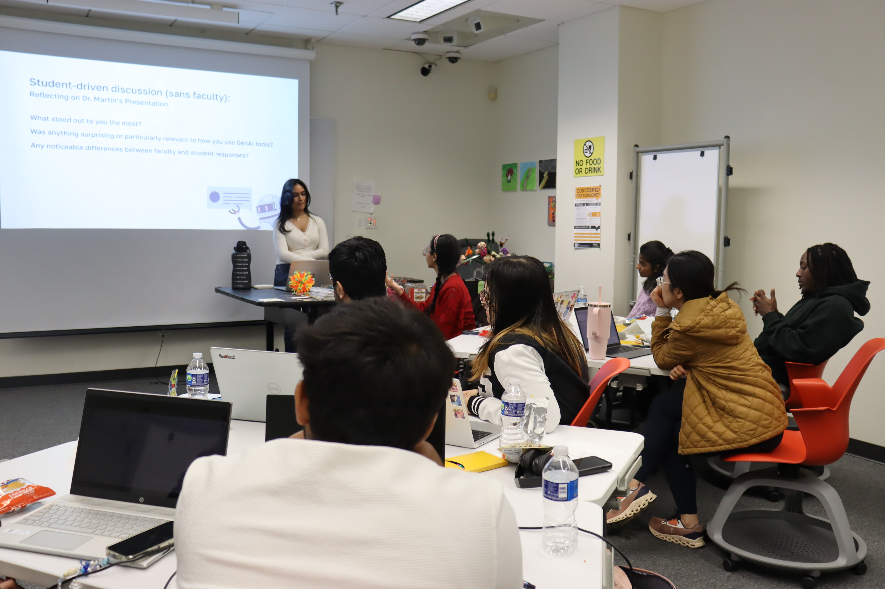
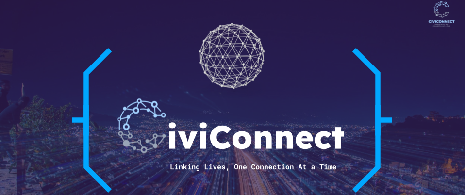

Participatory, not Punitive: Student-Driven AI Policy Recommendations in a Design Classroom
Most classroom AI policies are written without student input and focus on penalizing misuse. This paper examines how participatory, student-led AI policy design can address this disconnect. Through a three-part participatory workshop series in a graduate design studio, students co-developed ten policy recommendations, later visualized in a zine and distributed across campus.
CHI 2026
Generative AI is rapidly reshaping education, yet most classroom policies are written without students and prioritize penalization for misuse, yielding confusion and fear-based use. In this paper, we position students as lead users—or early adopters of generative AI—and report on a three-part, student-driven workshop series in a graduate design studio at a minority-serving public university. Through scaffolded workshop activities sans faculty, 12 students surfaced candid uses of AI, and authored, applied, iterated, and visualized ten policy recommendations compiled in a zine—a shareable, DIY booklet. Findings highlight the need for protected spaces to discuss unfiltered practice among students, and suggest that student-authored policies may foster clearer expectations and more purposeful use of AI in the classroom.

"I Wish I Had More Time": Investigating User Onboarding Methods in VR Immersive Analytics
ASIS&T 2025 Annual Meeting
Immersive analytics (IA) leverages immersive and interactive technologies to support data exploration, comprehension, and decision-making by presenting large volumes of multimodal data in virtual environments. However, the complexity of these systems can pose significant challenges for users, particularly during initial engagement. Effective onboarding is essential to help users acclimate to the environment and learn interaction techniques. In this work, we present findings from a study evaluating three onboarding methods for virtual reality-based IA systems: a desktop tutorial, in-Virtual Reality (VR) training, and self-guided exploration. Results indicate that most participants preferred a combination of all three approaches and emphasized the importance of early access to training components that may require additional time to understand.

CiviConnect
Solar-powered mesh network for Wi-Fi, focusing on providing connectivity solutions to underserved communities.